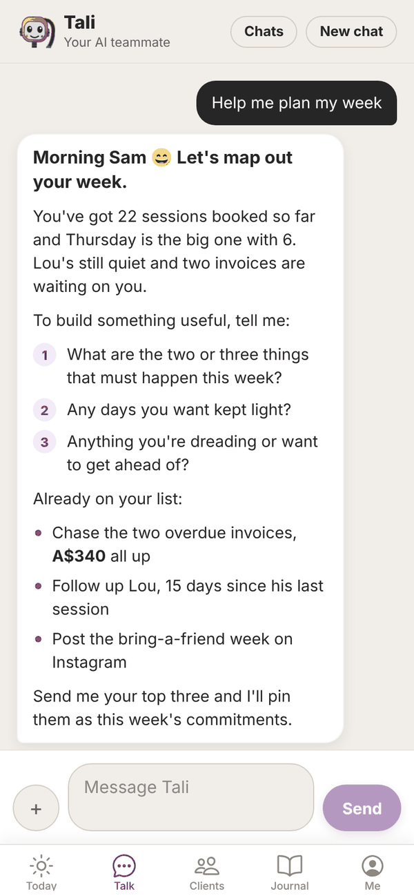
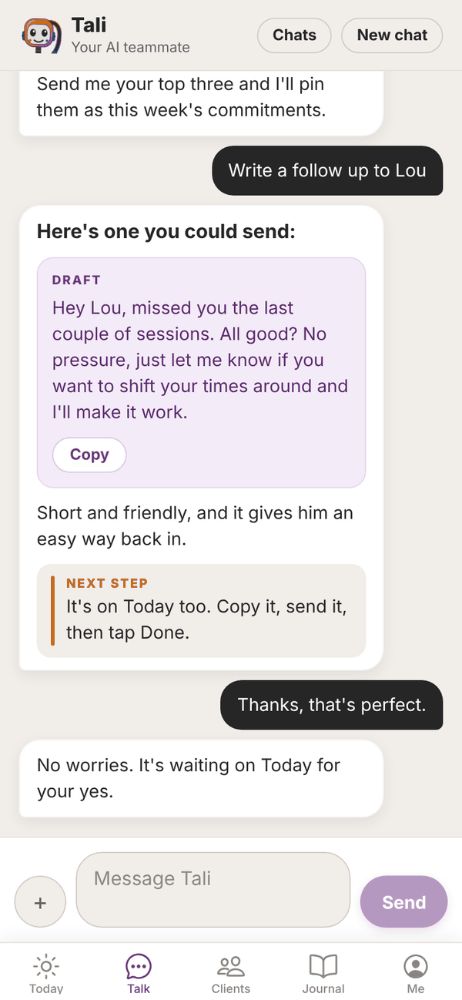
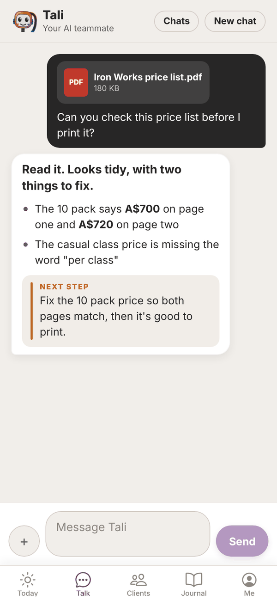

Tali HQ guide
How Tali's replies work
How Tali lays out her replies, what Draft and Next step mean, and how to send her photos and PDFs.
Tali's replies are laid out so you can read them at a glance instead of a wall of text. This page explains each part, and how to send her a photo or a PDF.
The parts of a reply#


- Lead line: the first line, in bold. It answers you or sets the scene. A quick answer stays one or two plain lines.
- Short paragraphs: two or three sentences each.
- Bullets: a purple dot for a list of things.
- Numbered steps: a number in a purple circle, for steps or questions she wants you to answer. Answer them in your next message, for example "1. Get the invoices paid 2. Keep Wednesday light".
- Bold: used now and then for a key number or name.
- DRAFT: a light purple box with a message she has written for you to send. Tap Copy to copy it (it changes to Copied for a moment), then paste it wherever you're sending it.
- NEXT STEP: a grey box with a purple line, for the one clear thing to do next.
Drafts in chat and on Today#
When you ask Tali to write something to send, the message shows in the chat as a DRAFT box, and it is also saved on your Today screen under Needs your yes. From Today you can ask her to make it shorter, warmer or more formal, send it (for emails, with Gmail or Outlook connected) or tap Done, I sent it. See Approvals.
The Copy button in chat only copies the text. It doesn't send anything or clear the draft on Today.
Send Tali a photo or PDF#
Tali can read photos, screenshots and PDFs and answer from what's in them. For example: log a meal from a photo of your plate, draft a reply to a screenshot of a DM, check a price list, or pull the numbers off an invoice. She tells you briefly what she read, so you know she saw it.

- In Talk, tap the + button left of the message box.
- On a phone, choose Choose a photo, Take a photo or Pick a PDF or file. On a computer, your file picker opens.
- Pick up to 4 files. Each one can be up to 10 MB.
- The files show above the box with "+1 credit for the files". Tap the ✕ on one to remove it.
- Add a message if you like, and tap Send.
| Free | Tali HQ | Pro | |
|---|---|---|---|
| Photos (JPG, PNG, WebP, GIF) | Yes, counts as one message | Yes, 1 extra credit per message | Yes, 1 extra credit per message |
| PDFs | No | Yes, 1 extra credit per message | Yes, 1 extra credit per message |
The extra credit is per message, not per file, so four photos in one message still only cost 1 extra credit.
Tap a photo or PDF in the chat to open it. Files you send are private to your account, and they are deleted when you delete that chat.
Questions#
Why does a reply sometimes have no layout at all?
Short answers stay as one or two plain lines on purpose. The layout only kicks in when there's more to say.
What can I send other than photos and PDFs?
Only photos and PDFs for now. Other file types show "Photos and PDFs only for now."
A file says it's over 10 MB.
Each file can be up to 10 MB. Take a smaller photo, or save the PDF at a smaller size, and try again.
Does Copy in the chat send the message?
No. It copies the text so you can paste it into a text, email or post. Nothing is ever sent by Tali on her own.
Can Tali read handwriting?
She does her best with clear photos. If she can't read something, she says so plainly.